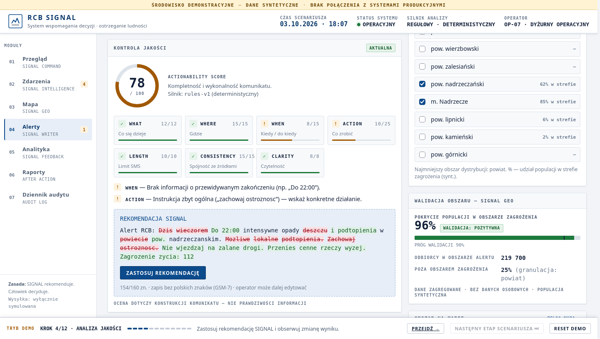
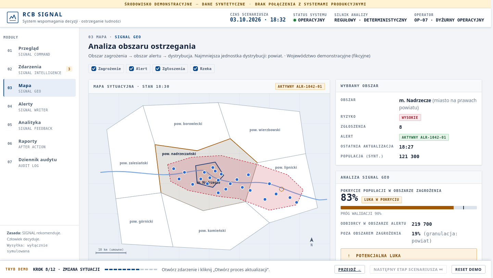
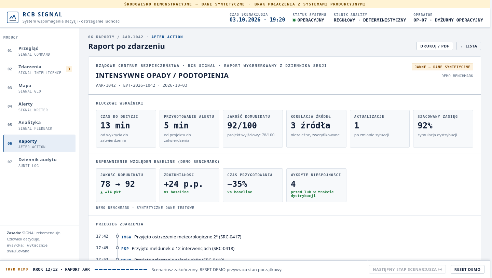

Jan Domański · Jakub Goleman · Krystian Góźdź · Maks Kozieł · Piotr Niemiec
ZESPÓŁ MoAI · HACKYEAH 2026 · OPEN TASK: DEFENCE
Alert RCB trafia do wszystkich telefonów w obszarze zagrożenia. Ma sens tylko wtedy, gdy odbiorca zrozumie, uwierzy i wie, co zrobić.
Dyżurny działa pod presją czasu: meldunki IMGW, PSP i WCZK przychodzą osobno, a SMS to 160 znaków, bez polskich liter, z dokładnością do powiatu.
Komunikat ogólny, bez instrukcji lub nieaktualny osłabia zaufanie do kolejnych ostrzeżeń (alert fatigue).
Narzędzie dla RCB.
Nie kolejna aplikacja
dla obywatela.
Jeden obraz sytuacji zamiast wielu meldunków. Kontrola jakości komunikatu przed wysyłką.
IMGW, PSP, WCZK — ich meldunki są łączone we wspólne zdarzenie i weryfikowane.
Korzysta pośrednio: dostaje krótszy, konkretny SMS z instrukcją. Bez instalowania czegokolwiek.
Raport po każdym zdarzeniu i mierzalna jakość ostrzegania, z pełnym dziennikiem decyzji.
Zamknięta pętla:
każdy alert uczy system,
jak przygotować następny.
Nie generator tekstu —
sprawdzian przed wysyłką
Brak godziny zakończenia · instrukcja zbyt ogólna
154/160 znaków · bez polskich liter · operator może dalej edytować
| Kryterium | Waga | Pytanie |
|---|---|---|
| WHAT | 12 | Co się dzieje? |
| WHERE | 15 | Gdzie? |
| WHEN | 15 | Od kiedy i do kiedy? |
| ACTION | 25 | Co mam zrobić? |
| LENGTH | 10 | 160 znaków, GSM-7 |
| CONSISTENCY | 15 | Zgodne ze źródłami? |
| CLARITY | 8 | Bez skrótów? |
Silnik regułowy: ten sam tekst = ten sam wynik. Ocenia konstrukcję komunikatu, nie prawdziwość informacji. Błędy blokujące (np. 173/160 znaków, brak instrukcji) uniemożliwiają zatwierdzenie.
github.com/MoAI-PL/HackYeah-2026-Krakow
Open Defence/RCB SIGNAL → python3 server.py → localhost:8080 → ▶ START DEMO



Jedno zdarzenie,
cały cykl ostrzegania
Niezweryfikowana informacja („zerwany most”) zostaje oznaczona i nie trafia do komunikatu.
Po zmianie sytuacji SIGNAL sam wskazuje, że wysłany alert jest nieaktualny — decyzję o aktualizacji podejmuje dyżurny.
Czy można temu zaufać?
| Człowiek decyduje | Wiarygodność danych | Bezpieczeństwo systemu |
|---|---|---|
| AI nie może samodzielnie wysłać, odwołać ani zmienić obszaru alertu. Zatwierdzenie wymaga potwierdzenia i uzasadnienia operatora. | Źródło jest zweryfikowane albo niezweryfikowane — bez sztucznych procentów. Zdarzenie potwierdzają min. 2 niezależne służby. | Treść zgłoszeń to wyłącznie dane: próba wstrzyknięcia poleceń (prompt injection) trafia do kwarantanny. |
| Dziennik audytu dla każdej decyzji: kto · kiedy · co · dlaczego · na podstawie czego. | Wynik jakości liczy deterministyczny silnik regułowy. LLM (opcjonalny) daje tylko opinię doradczą. | Brak danych osobowych — wyłącznie dane zagregowane. W demo dane są syntetyczne, a wysyłka tylko symulowana. |
| Kompletność komunikatów | ≥ 95% |
| Zrozumienie instrukcji | +20 p.p. |
| Czas przygotowania | −30% |
| Decyzje z pełnym audytem | 100% |
Test historyczny na archiwalnych komunikatach i test zrozumiałości: co, gdzie, kiedy, co zrobić?
Symulacja dyżuru: praca bez i z SIGNAL. Mierzymy czas, liczbę błędów i korekt.
Adaptery do rzeczywistych źródeł (IMGW, PSP, WCZK) i granice powiatów z danych PRG.
Role i uprawnienia, audyt w bazie danych, procedury zgodne z KSC/NIS2, szkolenia.
Stos: Python (biblioteka standardowa) + JavaScript, bez zależności, działa offline. Dane w demo są syntetyczne.
Wykorzystanie AI: Claude (Anthropic) wspierał tworzenie kodu, dokumentacji i prezentacji; opcjonalny moduł LLM w aplikacji ma rolę doradczą.